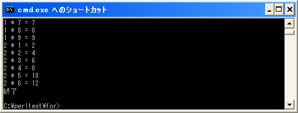

繰り返し処理にラベルを付ける
「last」演算子、「next」演算子、「redo」演算子を使うことで繰り返し処理の中でより細かい制御が出来るようになります。ただこれらの演算子の対象は、演算子が記述されている最も内側の繰り返し処理です。
繰り返し処理が多重になっている場合などに、最も内側の繰り返し処理ではなく対象となる繰り返し処理を指定することができます。この場合は各演算子の後ろに対象となる繰り返し処理に付けられたラベル名を指定します。
last ラベル; next ラベル; redo ラベル;
ラベルにはアルファベット・数字・アンダーバーが使用できます。ただし先頭に数字は使用できません。小文字でも大文字でも構わないのですが、Perlで用意されている関数などと区別するためにラベルには大文字を使うことが推奨されています。
ラベルは予め繰り返し処理で使われるブロックに対して名前を付けるために使用します。ラベルを付けるには各繰り返し処理の前に「ラベル:」と言う形式で指定します。例えばwhile文の場合は次のような形式となります。
ラベル: while (条件式){
# 何らかの処理
}
このように繰り返し処理のブロックに対して名前を付け、その名前を指定してlast演算子やnext演算子を使用します。例えば次のような使い方となります。
CALC: for (my $i = 1; $i < 10; $i++){
for (my $j = 1; $j < 10; $j++){
my $calc = $i * $j;
print "$i * $j = $calc¥n";
if ($calc > 10){
last CALC;
}
}
}
上記の場合、for文が多重となっています。内側の繰り返しの中で掛け算をした結果が10よりも大きくなった場合はlast演算子を使って繰り返し処理を終了させています。通常であればlast演算子が含まれる最も内側の繰り返し処理を終了させるだけですが、今回は場合はラベルを指定してlast演算子を実行していますので、外側の繰り返し処理を対象としてlast演算子が実行されます。結果として一番外側の繰り返し処理が終了します。
このようにラベルを使うことでより細かい制御が行えるようになりますが、あまり多用すると複雑で分かりにくいプログラムとなってしまいますので注意して下さい。
サンプルプログラム
では簡単なプログラムで確認して見ます。
use strict;
use warnings;
use utf8;
binmode STDIN, ':encoding(cp932)';
binmode STDOUT, ':encoding(cp932)';
binmode STDERR, ':encoding(cp932)';
CALC: for (my $i = 1; $i < 10; $i++){
for (my $j = 1; $j < 10; $j++){
my $calc = $i * $j;
print "$i * $j = $calc¥n";
last CALC if $calc > 10;
}
}
print "終了¥n";
上記を「test10-1.pl」の名前で保存します(文字コードはUTF-8です)。そしてコマンドプロンプトを起動し、プログラムを保存したディレクトリに移動してから次のように実行して下さい。

今回の例では2つの繰り返しを使って掛け算の結果を表示させていますが、掛け算の結果が10よりも大きくなった時点で、繰り返し全体を終了させます。
( Written by Tatsuo Ikura )

著者 / TATSUO IKURA
初心者～中級者の方を対象としたプログラミング方法や開発環境の構築の解説を行うサイトの運営を行っています。